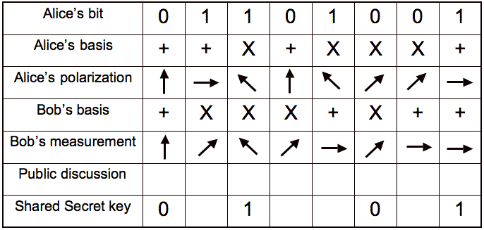

BB84 is a Quantum Key Distribution (QKD) Protocol.
It was created in 1984 by Charles Bennet and Gilles Brassard.
The purpose of BB84 is to create secure one time pads or keys to use with classical encryption algorithms.
There are three individuals involved in this protocol.
Alice - Sender
Bob - Receiver
Eve - Eavesdropper
Each "qubit" has three values: bit, basis, polarization.
Basis determines what polarizations one can measure and send.
+ basis for 0° and 90°
x basis for 45° and 135°
Each basis has two degree measures, one measure for 0 bit value, one measure for 1 bit value.
Bit and polarization are locked, and determine each other.
0° = 1 (+ basis)
45° = 0 (x basis)
90° = 0 (+ basis)
135° = 1 (x basis)
Alice sends Bob a predetermined amount of qubits to build their one time pad with.
If the receiver guesses the correct basis, they can infer the bit even if they guess the incorrect polarization.
This means any receiver, Bob or Eve, has a 50% chance of measuring the qubit correctly.

BB84 relies on the "No-Cloning" theorem.
The No-Cloning Theorem states that Eve cannot measure a qubit in the wrong basis and send a clone of this qubit to Bob.
In practice, this means Eve has a 50% chance of guessing the correct basis.
If Eve guesses correctly, Eve can resend the same qubit to Bob with no issues.
If Eve guesses incorrectly, this is where the No-Cloning Theorem takes effect.
By the No-Cloning Theorem, Eve cannot measure a qubit on the incorrect basis and send an exact copy to Bob.
While Eve knows the correct basis, Eve cannot deduce the polarization.
Therefore Eve is forced to guess the correct polarization and will have 50% of sending Bob the correct qubit.
Bob then has a 50% chance of measuring this new qubit on the correct basis.
This means if Eve intercepts the qubit, Bob has a 25% chance of measuring it correctly.
50% * 50% = 25%
To recap:
If Eve if present, Bob has a 25% chance of measuring each qubit correctly.
If Eve is absent, Bob has a 50% chance of measuring each qubit correctly.
BB84 takes advantage of the probability of correct measurement to ensure secure communication.
When Alice and Bob compare the qubits sent and received, they will look at the measurement error rate.
If Eve is present, as key size increases, the error rate will approach 75%.
If Eve is absent, as key size increases, the error rate will approach 50%.
Acceptable error rate is up to Alice and Bob to determine. This simulation uses a 70% error rate threshold.
If the error rate is above this threshold, Alice and Bob will determine there is an eavesdropper (Eve) and will cease communication.
If Alice and Bob determine there is no eavesdropper, they can build and use their keys.
Keys are generated by using the qubits Bob correctly measured.
Alice and Bob compare the qubits sent to the qubits measured and select congruent bit measurements for the key.
At this point, the protocol is over. Alice and Bob can now be certain the key they generated is not known by anybody else.